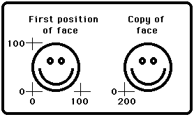

takepic (x1, y1, x2, y2 : int, var buffer : array 1 .. * of int)
The takepic procedure is used to record the pixel values in a rectangle, with left bottom and right corners of (x1, y1) and (x2, y2), in the buffer array. This requires a sufficiently-large buffer (see sizepic ). The drawpic procedure is used to make copies of the recorded rectangle on the screen.
After drawing a happy face, this program copies the face to a new location.

The integer values that takepic places in the buffer can be read or written (using the read and write statements). Unfortunately, if a value happens to be the pattern used to represent the uninitialized value (the largest negative number the hardware can represent) assignment (by:=) and put of the individual integer values in the buffer will fail. The screen should be in a "graphics" mode. See the setscreen procedure for details. If the screen is not in a "graphics" mode, it will automatically be set to "graphics" mode.
The drawpic, takepic, and sizepic subprogramshave been made obsolete by the subprograms pic_draw.html andpic_new.html of the picmodule.html module. Users are strongly suggested to use those routines instead. The picmodule.html module also contains subprograms to load images from files.
sizepic.html and drawpic.html. See also setscreen.html, maxx.html, maxy.html, drawdot.html, drawline.html, drawbox.html, and drawoval.html. See also predefined unit picmodule.html.